Actividad 09 Lab: Traversal sequences stripped non-recursively
Reporte Original
Reporte de Actividad Detallado// Extensión: .pdf
Nivel de Laboratorio
PRACTITIONER
Clasificación
Path Traversal (CWE-22). Lectura arbitraria de archivos del servidor mediante bypass de un filtro de sanitización no recursivo.
Objetivo
Explotar la funcionalidad de visualización de imágenes de productos para recuperar el contenido del archivo /etc/passwd del servidor, evadiendo el filtro que elimina secuencias de traversal.
Marco teórico y explicación técnica
La aplicación carga las imágenes de sus productos mediante un endpoint del tipo: GET /image?filename=39.jpg, donde el servidor concatena el valor de filename con un directorio base predeterminado (por ejemplo, /var/www/images/) para localizar el archivo solicitado.
La particularidad de este laboratorio es el mecanismo de defensa que implementa: la aplicación busca y elimina la secuencia de caracteres ../ dentro del valor recibido, con el objetivo de impedir que el usuario navegue fuera del directorio de imágenes. Sin embargo, esta sanitización tiene un defecto crítico en su implementación: se ejecuta de forma no recursiva, es decir, realiza una única pasada de búsqueda y reemplazo sobre la cadena de entrada, en lugar de repetir el proceso hasta que ya no queden coincidencias de "../".
Cuando el filtro recibe una cadena como ....// (cuatro puntos seguidos de dos diagonales), busca la subcadena "../" dentro de ella. Dicha subcadena sí existe, desplazada un carácter respecto al inicio: la cadena "....//" puede leerse como "." + "../" + "/". Al eliminar únicamente esa coincidencia interna, los caracteres que quedan a la izquierda y a la derecha de la coincidencia se unen entre sí, reconstruyendo accidentalmente la secuencia "../" que se pretendía bloquear.
Como el filtro no vuelve a analizar la cadena resultante (no es recursivo), esta nueva secuencia "../" sobrevive intacta y es la que finalmente utiliza el sistema operativo para resolver la ruta del archivo.
Este caso ilustra un principio importante en el diseño de controles de seguridad: una validación basada en eliminar patrones prohibidos (blacklist) es intrínsecamente frágil si no se aplica de forma recursiva o si no se revalida la cadena resultante después de cada transformación, ya que el propio proceso de "limpieza" puede terminar generando el patrón que se buscaba eliminar. Desde la óptica de los principios CIA, la vulnerabilidad compromete la Confidencialidad de la información del servidor.
Virtual Backend Sandbox (Non-Recursive Filter)
Procedimiento paso a paso y evidencias
Paso 1
Se abrió Burp Suite Community Edition y, en la ventana de bienvenida, se seleccionó la opción "Temporary project in memory", ya que se trata de una sesión de práctica puntual que no requiere persistirse en disco.
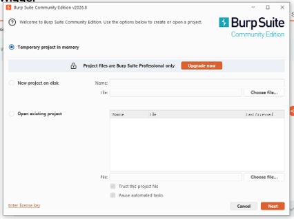
Paso 2
En la siguiente ventana se eligió "Use Burp defaults" y se presionó "Start Burp", inicializando la herramienta con su configuración estándar: proxy de intercepción en 127.0.0.1:8080 y certificado CA propio para inspeccionar tráfico HTTPS.
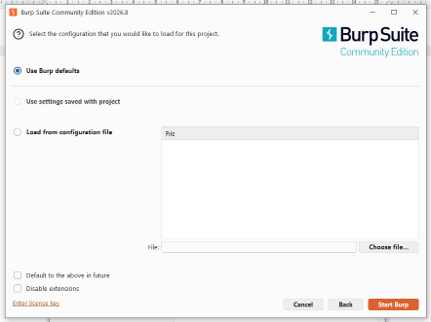
Paso 3
Burp abrió su panel principal en la pestaña Proxy › Intercept, con el interceptor apagado. La herramienta advirtió además que aún no había listeners de proxy activos ("No proxy listeners are currently running"), lo cual es el estado normal antes de comenzar a capturar tráfico.
Paso 4
Desde el navegador habitual se abrió la página de descripción del laboratorio en PortSwigger Web Security Academy y se dio clic en "ACCESS THE LAB". Esta acción generó una instancia única y temporal del laboratorio, con una URL aleatoria asociada a la sesión, que fue la que se utilizó en los pasos posteriores dentro de Burp.
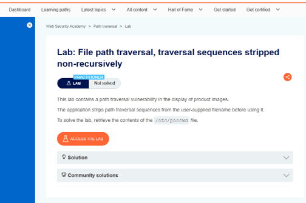
Paso 5
El navegador redirigió automáticamente a la instancia del laboratorio, mostrando la tienda "We Like To Shop" ya cargada y en estado "Not solved". De la barra de direcciones se copió la URL completa del laboratorio para reutilizarla dentro del navegador integrado de Burp.
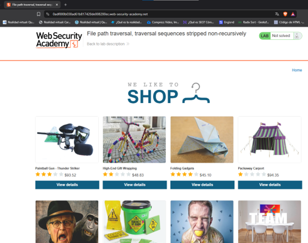
Paso 6
Se regresó a Burp Suite y se activó "Intercept on" en la pestaña Proxy. A partir de este momento, toda petición que pase por el proxy quedará detenida hasta ser reenviada, descartada o editada manualmente. Después se presionó "Open browser", que abre una instancia de Chromium preconfigurada por Burp, con el proxy y el certificado CA correctos.
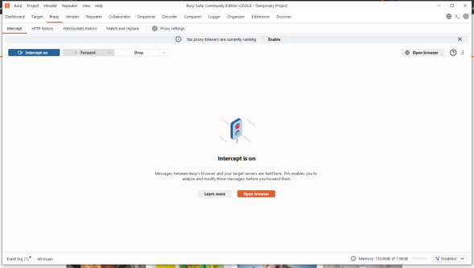
Paso 7
En el navegador embebido de Burp se pegó la URL del laboratorio obtenida en el paso 5. Al intentar cargar la página, Burp interceptó de inmediato la primera petición: GET / dirigida al dominio de la instancia, correspondiente al documento HTML principal. Se aceptó (Forward) para permitir que la carga continuara.
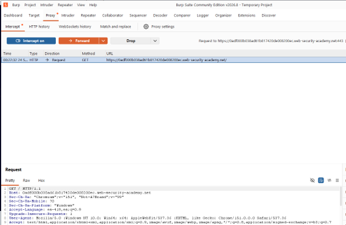
Paso 8
Al seguir reenviando peticiones, Burp fue deteniendo una a una las numerosas solicitudes GET /image?filename=N.jpg que el navegador dispara automáticamente para cargar las miniaturas de cada producto del catálogo (filename=39.jpg, 53.jpg, 8.jpg, 31.jpg, etc.). Esta cola de peticiones dejó en evidencia el patrón exacto que utiliza la aplicación para referenciar cada imagen: un nombre de archivo simple pasado directamente como parámetro, sin ningún identificador indirecto.
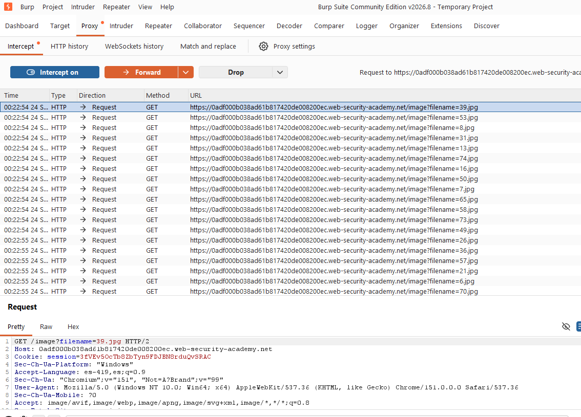
Paso 9
Sobre una de estas peticiones (filename=39.jpg) se dio clic derecho para abrir el menú contextual de Burp y se seleccionó "Send to Repeater" (Ctrl+R). Esto envía una copia exacta de la petición a la pestaña Repeater, donde puede modificarse manualmente y reenviarse cuantas veces sea necesario, observando la respuesta del servidor en tiempo real.
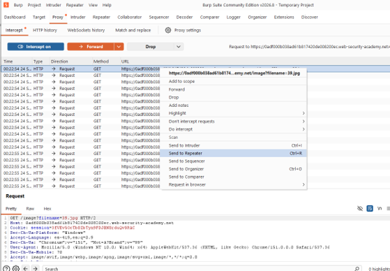
Paso 10
Como prueba de control, se envió primero la petición sin modificar (filename=39.jpg) para confirmar el comportamiento normal del endpoint. El servidor respondió con 200 OK, Content-Type: image/jpeg y el contenido binario de la imagen del producto, estableciendo así una línea base contra la cual comparar los intentos de explotación posteriores.
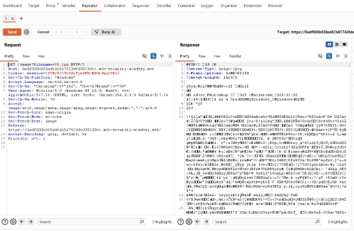
Paso 11
Como primer intento se modificó el parámetro a filename=etc/passwd, es decir, una ruta relativa simple sin secuencias de traversal, con la intención de comprobar si el servidor interpretaba la ruta desde la raíz del sistema. El servidor respondió con 400 Bad Request y el mensaje "No such file": la ruta relativa etc/passwd, resuelta desde el directorio base de imágenes de la aplicación, no corresponde a ningún archivo existente en esa ubicación.
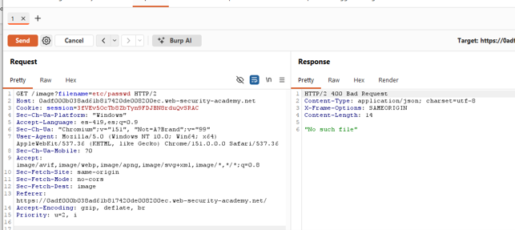
Paso 12
Como segundo intento se utilizó el payload clásico de traversal relativo, filename=../../../../etc/passwd, empleando cuatro niveles de retroceso para garantizar que se alcanzara la raíz del sistema de archivos independientemente de la profundidad real del directorio base. El servidor volvió a responder 400 Bad Request con "No such file", confirmando que la aplicación efectivamente detecta y elimina las secuencias "../" de la entrada antes de construir la ruta final, tal como se describe en el enunciado del laboratorio.
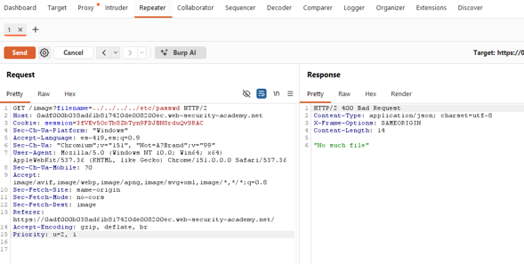
Paso 13
Como tercer intento se construyó el payload filename=....//....//....//etc/passwd, aprovechando que el filtro solo elimina una única aparición de "../" por cada bloque "....//" y no vuelve a analizar la cadena resultante. Al enviar la petición, el servidor respondió 200 OK con Content-Type: image/jpeg (el mismo tipo de contenido que una imagen legítima, ya que la aplicación no valida el contenido devuelto), pero el cuerpo de la respuesta contenía texto plano: el listado completo de cuentas del sistema operativo del servidor (root, daemon, bin, sys, www-data, backup, peter, carlos, entre otras), es decir, el contenido real de /etc/passwd.
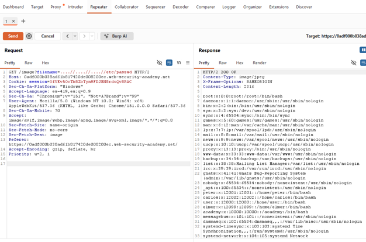
Paso 14
Finalmente, se regresó a la pestaña del laboratorio en PortSwigger y se refrescó la página. La plataforma mostró el banner "Congratulations, you solved the lab!" y el indicador de estado cambió de "Not solved" a "Solved", acreditando de manera oficial la explotación exitosa de la vulnerabilidad.
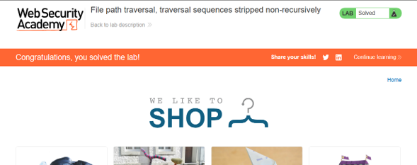
Explicación técnica de los payloads
Es una ruta relativa sin ningún intento de traversal. Al concatenarse con el directorio base de imágenes, el servidor busca un archivo llamado literalmente etc/passwd dentro de /var/www/images/, ubicación en la que evidentemente no existe. Este intento sirvió únicamente para confirmar la ruta base que utiliza la aplicación y descartar que el endpoint aceptara rutas absolutas sin restricciones.
Es el payload de traversal relativo estándar, el mismo que resolvería la vulnerabilidad en un laboratorio de Path Traversal básico sin protecciones. Aquí falló porque la aplicación sí inspecciona la entrada y elimina explícitamente cada aparición de la subcadena "../" antes de construir la ruta final, neutralizando este intento directo.
Cada bloque "....//" contiene, desplazada un carácter, la subcadena exacta "../" (los caracteres 3.º a 5.º del bloque). Al eliminar el filtro esa única coincidencia, los caracteres restantes del bloque se unen y reconstruyen accidentalmente una nueva secuencia "../".
Como la sanitización se ejecuta en una sola pasada (no recursiva), esta secuencia "../" reconstruida no vuelve a ser inspeccionada ni eliminada, y permanece en la cadena final que el sistema operativo utiliza para resolver la ruta.
Los tres bloques "....//" se traducen, después del filtrado, en tres niveles reales de retroceso de directorio ("../../../"), suficientes para escapar del directorio base de imágenes y llegar hasta la raíz del sistema de archivos, desde donde /etc/passwd es directamente accesible.
El uso de diagonales dobles ("//") en lugar de una sola es intencional: aporta los caracteres adicionales necesarios para que, tras remover "../", el remanente conserve la diagonal final que separa correctamente cada nivel de directorio en la ruta reconstruida.
Mitigación recomendada
- Aplicar la sanitización de forma recursiva: eliminar la secuencia "../" repetidamente, en un ciclo, hasta que una pasada completa sobre la cadena no produzca ningún cambio, en lugar de realizar una única sustitución.
- Evitar por completo el uso de listas negras (blacklist) de patrones prohibidos como mecanismo principal de defensa, ya que —como se demostró en este laboratorio— es posible construir entradas que generen el patrón bloqueado como efecto colateral del propio proceso de limpieza.
- Adoptar un enfoque de lista blanca (whitelist): validar el nombre de archivo contra un conjunto cerrado de valores o patrones permitidos (por ejemplo, únicamente dígitos seguidos de ".jpg"), rechazando cualquier entrada que no coincida.
- Canonicalizar la ruta final (equivalente a realpath()) después de concatenar el directorio base con la entrada del usuario, y verificar que la ruta resultante permanezca dentro del directorio autorizado antes de acceder al archivo.
- Sustituir el nombre de archivo controlado por el usuario por un identificador indirecto (un ID numérico de producto, por ejemplo), de modo que el servidor sea el único responsable de traducir ese identificador a una ruta real en el sistema de archivos.
- Ejecutar el proceso del servidor bajo el principio de mínimo privilegio, restringiendo sus permisos de lectura a únicamente los directorios estrictamente necesarios para su funcionamiento.